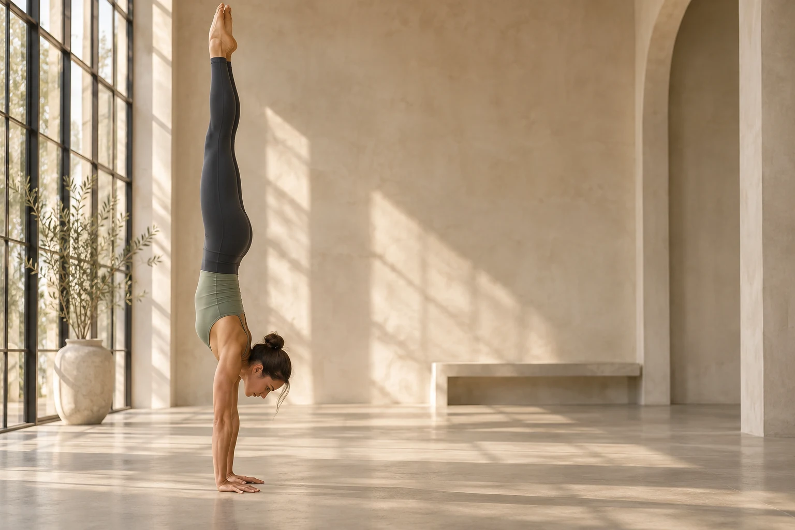

לראות. להבין. להשתפר.
למצוא את האיזון.
למצוא את האיזון.
לדייק את התנועה.
הצעד הבא בעמידת הידיים שלך מתחיל כאן.
סרטון אחד, תמונה ברורה של הטכניקה שלך,
וכיוון מדויק לאימון הבא.
הסרטון נשאר אצלך. הניתוח מתבצע במכשיר.

HANDSTAND / TECHNIQUE STUDIO
כל הפרטים. תמונה אחת.קו גוף · איזון · כתפיים · ידיים · יציבות
המחשההסטודיו שלך
ניתוח חדשמוכנים לראות את התנועה אחרת?
01 / הסרטון שלך פרטי ומקומי
התנועה שלך, במרכז
בחרו סרטון עמידת ידיים מהמכשיר או גררו אותו לכאן
מומלץ 5 שניות ומעלה · גם סרטון עלייה קצר מתאים
01 בוחרים סרטון←02 מנתחים את התנועה←03 מקבלים כיוון לאימון הבא
מה לעשות בפעם הבאה
מה עובד לך
תרגילים לשיפור
אלה הצעות כלליות. תתאמן ליד קיר ועל משטח רך, ואם יש כאב, עצור.
צפה בעצמך
כמה טוב היה הקו שלך לאורך הזמן. לחץ על הגרף כדי לקפוץ לרגע:
הקו הירוק הוא הקו האידיאלי, הצהוב הוא הגוף שלך. הציונים הם הערכה ראשונית, לא תחליף למאמן.